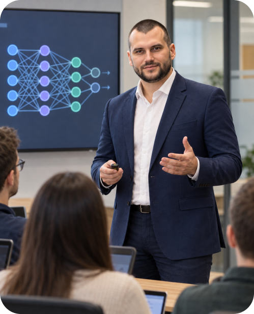
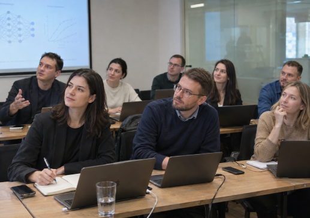
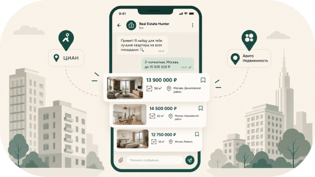
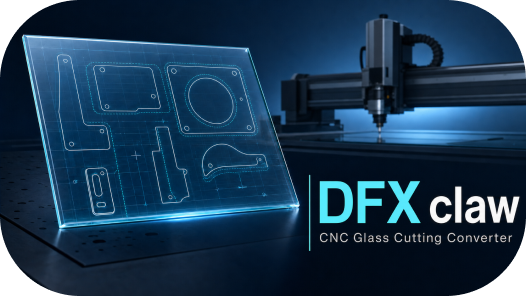
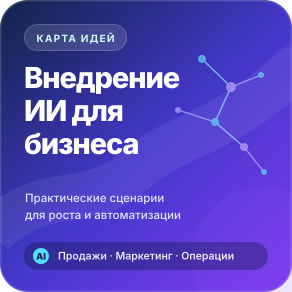

Обычное обучение
- Обзор десятков инструментов
- Примеры из чужого бизнеса
- Нет владельца результата
- Материалы забываются
Для собственников и команд
Практическое обучение на ваших процессах: продажи, маркетинг, поддержка и операции. На выходе — сценарии, промты, регламент и первый пилот.

С чего начинаем
Не заставляем команду изучать десятки сервисов. Выбираем конкретную операцию и проектируем рабочий способ применения ИИ.
Что вы получите
Материалы можно использовать, улучшать и передавать новым сотрудникам.
Где ИИ полезен, где рискован и что внедрять первым.
Шаблоны под роли, задачи и стандарты компании.
Пошаговые процессы для сотрудников и руководителей.
Правила данных, проверки и ответственности.
Для кого
Собственник, руководитель и исполнитель получают нужный уровень глубины.

Выбрать приоритет, бюджет и критерий пилота.
Перестроить процесс и контролировать качество.
Применять ИИ в ежедневных задачах.
Программа
Глубина программы адаптируется под отрасль, роли и выбранный процесс.
Ищем повторяющиеся операции и точки быстрого эффекта.
Контекст, ограничения и критерии результата.
Инструкции, примеры и база знаний.
Продажи, маркетинг, сервис и операции.
API, Telegram, n8n, таблицы и CRM.
Данные, проверка результата и контроль ошибок.
Процесс
У каждого этапа есть результат, ответственный и критерий готовности.
Выбираем процесс и цель.
Собираем примеры и ограничения.
Создаём рабочие сценарии.
Проверяем на реальной задаче.
Передаём регламент и план.
Практическая база

Мониторинг недвижимости: фильтрация объявлений, уведомления и автоматизация поиска.
Открыть кейс →
Форматы и стоимость
Для собственника или руководителя
Для команды или отдела
Для компании и нескольких ролей
Бесплатный материал
Сценарии для продаж, маркетинга, поддержки и внутренних операций.
Получить карту идей
FAQ
Да. Сложность адаптируется под участников и их рабочие задачи.
Нет. Сначала определяем минимальный набор под задачу.
Да, после определения правил доступа и проверки результата.
Будет общая база и отдельные практические треки.
Следующий шаг
Четыре вопроса — и можно обсудить формат, программу, сроки и бюджет.
Сергей Николаенко
Python · AI automation · Telegram
rj2biz@mail.ru